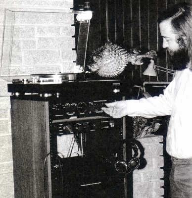
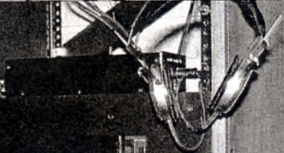
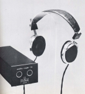
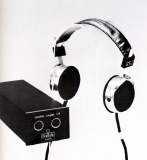
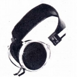
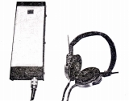
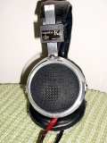

Fontek reseach（フォンテック・リサーチ）
かつてスタックス（＊1）でSR-X等の開発に従事していた丹羽久雄氏がつくったコンデンサー・ヘッドフォンの専業メーカー。 1970年代後半から独自のコンデンサー・ヘッドフォンを作り続けていたが、1990年代後半に活動を停止したようだ（＊2）。なお丹羽久雄氏は2001年5月（＊3）に亡くなられたそうだ。
丹羽氏がスタックスに勤務していた関係で、スタックスの分家のように扱われたこともあるようだが、丹羽氏の残した文章を読む限りでは、少なくとも丹羽氏独立後のスタックスの路線とはかなり違った製品だったようだ。その製品の特徴としては「膜エレクトレット」コンデンサー型であること」、「上級機種では複数の振動膜を直列に配置し特性の向上を図っていること」、さらに「最上級機では前方定位特性を持つこと」があげられる。


(1980年代初頭はネルソン・パス氏もフォンテック・リサーチを愛用していたようだ）
＊1 丹羽久雄氏がスタックスに在籍していたことについては「STAX Unoffcial Page」のmoさんに教えていただきました。ありがとうございます。
＊2 当方が集めた文献の中でフォンテックリサーチの動向で最後のものは、「1996年 ミニフォンＫ３再改良」と記されたステレオサウンド社の「YEAR BOOK」の1999年版の記述である。Stereo Sound YEAR BOOKでは1999年版までは掲載、2000年版では姿を消している。しかし、最近、丹羽久雄氏の義弟に当たる方のブログを見つけ連絡を取った結果、丹羽氏は亡くなる5年ほど前に体調をくずされており、1999年時点より前に、メーカーとしての活動は終了していたようだ。丹羽久雄氏の消息については「Bach,Boat,Bios B4の生活」の「okimideiko」氏に教えていただきました。ありがとうございます。
＊3 丹羽久雄氏の消息については、「Jupiter」氏に教えていただきました。ありがとうございます。
Fontek
reseach（フォンテック・リサーチ）の製品を以下のように分類する。（この分類は個人的な意見で、メーカーの分類ではありません）
�T. 第１世代の製品
（ベーシックモデル＊） Minifon
A-4
（複合振動系採用） Minifon A-4/MK2
（複合振動系採用/前方定位型） Minifon A-4/MK4


（左 Minifon A-4 右 Minifon A-4/MK4）＊ベーシックモデル
創業当時の広告では「Minifon A-1」という機種が掲載されている。「Minifon
A-4」が三層構造のユニットであるのに対し、単層膜で膜厚も２倍のモデルだったらしい。価格は\16,000となっており、販売されていればこのモデルこそベーシックモデルなのかもしれないが、Stereo
Sound YEAR
BOOK等には登場しない。おそらく「A-1」は販売されなかったものと思われる。また広告に記載されているものには、MCカートリッジ用ヘッドアンプ「K-22」が\16,000と紹介されているが、こちらも販売されなかったものと思われる。なお丹羽氏が、フォンテック・リサーチ立ち上げ前に雑誌で公開したシステムと、広告のリスニングルームの陣容を比べると、プリアンプ・パワーアンプ・ラウドスピーカーまで開発していたようだ。
�U. 第２世代の製品
ベーシックモデルは「Minifon
A-4」のままで、上級機が1982年にモデルチェンジした。その後マイナーチェンジがあった模様。
（複合振動系採用） Minifon F Minifon
F/MK2
（複合振動系採用/前方定位型） Minifon M Minifon
M/MK2


（左 Minifon F 右 Minifon M）
�V. 第3世代の製品
複合振動系採用モデルは「Minifon
F/MK2」のままで、ベーシックモデルが1986年頃にモデルチェンジした。合わせて前方定位型が「ＭＫ３」へ、カプラー（他社ではアダプターに相当）もモデルチェンジした。やがて複合振動系採用を採用した通常モデルは製造中止となり、前方定位型は最終モデル？である「Minifon
K3」が登場する。
（ベーシックモデル） Minifon
A
（複合振動系採用/前方定位型＊） Minifon
M/MK3 Minifon M3 Minifon
K3

(Minifon K3)＊前方定位型モデル
「Minifon M/MK3」、「Minifon M3」はそれぞれStereo
Sound YEAR BOOKの1987年版、1989年版に掲載の機種。次項の「Minifon
K3」と販売時期が重複するが、価格が違う為、詳細不明だが掲載した。
＊Minifon K3及びカプラーE8について、「Jupiter」氏所有機の画像を使用しました。ありがとうございます。